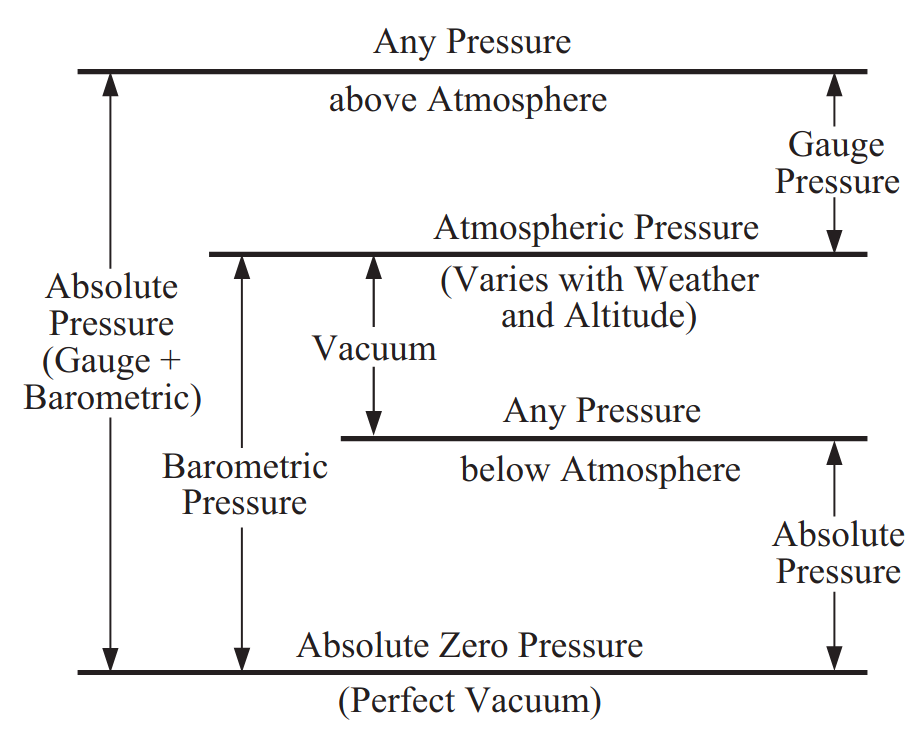

Incompressible Pipe Flow#
A succinct, summarized version of Rennel’s Pipe Flow (2012) on incompressible flow in a pipe.
Definitions#
First, we’ll cover some key words and definitions.
{kind=link}

Critical pressure: The pressure of a pure substance at its critical state; where the density of the saturated liquid is the same as the density of the saturated vapor. At pressures higher than the critical, a liquid may be heated from a low temperature to a very high one without any discontinuity indicating a change from the liquid to vapor phase.
Energy (work energy): A measure of the ability of a substance to do or absorb work. Energy may exist in five forms:
Potential, owing to a substance’s elevation above an arbitrary datum
Pressure, which is a measure of a fluid’s ability to lift some of itself to a level above an arbitrary datum or propel some of itself to a velocity
Kinetic, which resides in a substance’s speed or velocity
Heat, which ultimately is a measure of the kinetic energy of the molecules of a substance
Work
Viscosity: The resistance offered by a fluid to relative motion, or shearing, between its parts.
Absolute viscosity: The frictional or shearing force per unit area of relatively moving surfaces per unit velocity for a unit separation of the surfaces. Also called dynamic viscosity.
Critical temperature: The temperature of a pure substance at its critical state, above which its gas phase cannot be liquefied by the application of pressure, because at the critical temperature the latent heat of vaporization vanishes (becomes zero) and the liquid cannot be distinguished from the gas.
Latent heat of vaporization: The amount of energy (typically measured in joules per gram or kilojoules per mole) required to change a substance from the liquid phase to the gas phase at a constant temperature and pressure, without changing its temperature. It represents the energy needed to overcome the intermolecular forces holding the liquid together.
Momentum Correction Factor#
A small aside, but TLDR, if your pipe has laminar flow, you cannot use the momentum conservation equations without the correction factor \(\theta \approx 1.33\).
Motivation: when performing control volume analysis, you typically apply conservation of mass, momentum, and energy. In pipe flow, if we assume a flat velocity profile (average velocity = velocity everywhere along the cross section), we can say that:
where \(V\) is the average fluid velocity. The corresponding differential equation (looking at a infinitesimal mass with local velocity \(u\)) is:
If we integrate this differential equation over the total cross sectional area A where the fluid velocity is not uniform throughout, we will arrive at a value that is not equal to \(\dot{m}V\), and so we can account for this by saying that the integral equals \(\dot{m}V\) times a correction factor:
where \(\theta\) is the momentum flux correction factor.
Conservation of Energy#
Units: It is convenient to express energy in work units such as foot-pounds or newton-meters, and unit energies in terms of foot-pounds per pound of fluid, or newton-meters per newton. Five kinds of energy flux must be considered: potential, pressure, kinetic, heat, and work.
Note that hence unit energies thus are in units of length!
Potential energy: Every unit of fluid lifted above an arbitrary datum required a certain amount of work to lift it there. If the unit of fluid quantity is pounds (or newtons), the work required (in a uniform gravity field) is its weight times the height it was lifted, ft-lb (or N-m). Thus the unit energy is ft-lb/lb or ft (or N-m/N or m), equal numerically and dimensionally to its elevation Z above the datum. This is called the elevation or potential head.
Pressure energy: Pressure is commonly expressed as force per unit area—for example, lb/in2, lb/ft2, or N/m2 (pascals). If the fluid’s pressure is divided by its weight density, its potential for doing work is expressed in potential energy terms. Consistent units will eliminate mixed unit problems. Thus:
So when we talk about pressure “head,” we’re just normalizing the pressure by the weight density.
Kinetic energy: The simple equations of motion show that in the absence of resistance any body dropped from one elevation to another lower elevation acquires a velocity of:
Conversely, any body moving with velocity \(V\) can, if the velocity can be directed upward, attain a height of:
A fluid’s energy of motion is thus \(V^2/2g\) ft-lb/lb or simply ft (or N-m/N or m). This is called the velocity head.
Heat: Heat is equivalent to work (J = N-m), and so when dealing with heat transfer rate (J/s, or just power in Watts), we can express heat in the same units of potential energy by dividing by the weight flow rate of the fluid:
Mechanical work energy: The mechanical work done on the fluid in the flow system by a pump and, as in the case of heat flux, the work done by the fluid in a turbine must be expressed in power units, or work per unit time, to maintain dimensional homogeneity in the energy equation. The power from a pump is converted to potential energy units in the same way as for heat: via the weight flow rate.